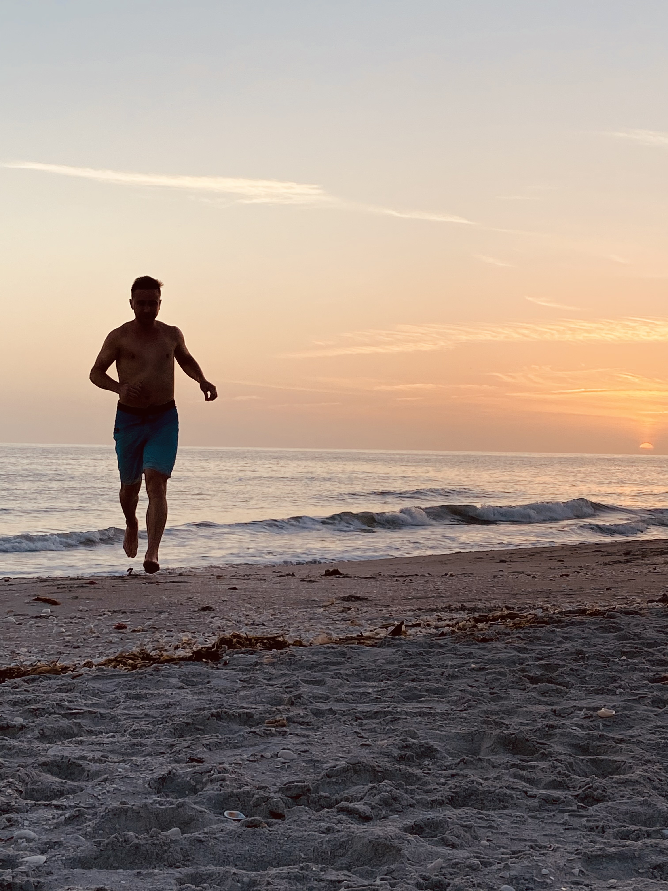
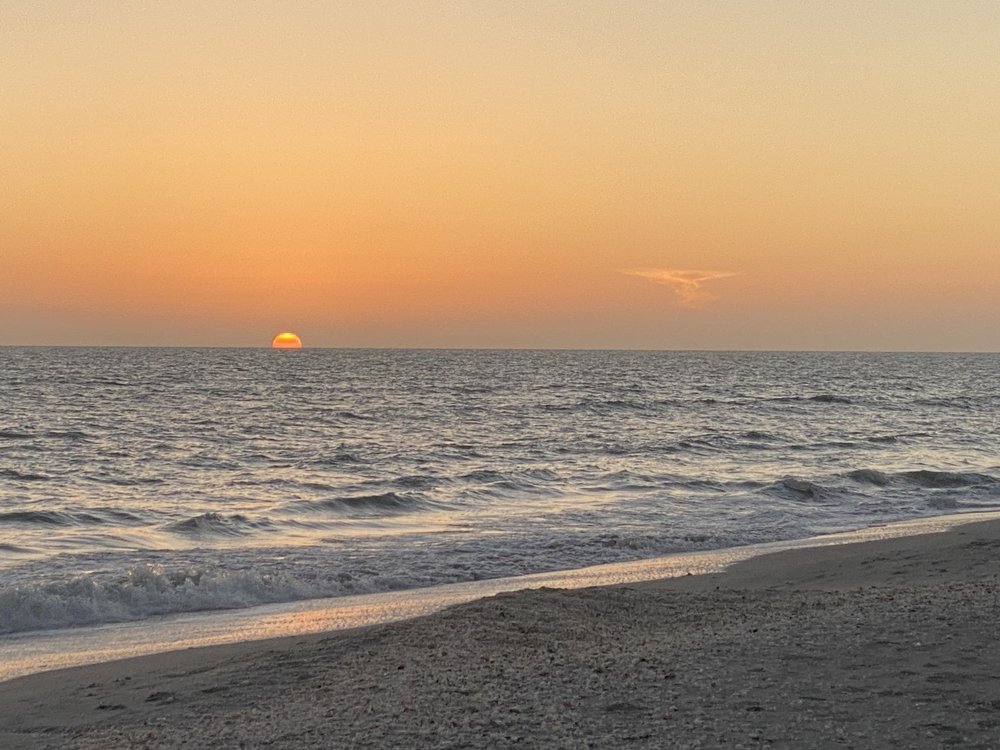

My Ultrarunning, Hiking, and Traveling Adventures
From the mountains of Maine, into the Midwest, and to the beautiful beaches of Florida, my ultrarunning and traveling journeys have allowed me to breathe the freshest of air, reconnect with nature, and witness the most gorgeous sunrises and sunsets available to humans.
Sanibel Island beach run.
In March of 2021 my boyfriend and I spent seven days roasting in the sun, drinking frozen margaritas, and gathering thousands of seashells on the beautiful beaches of Sanibel Island. We took this trip to get an early start on our summer tan, reconnect with nature and ourselves, and escape the frenzied lifestyle of Washington DC.

Florida Gulf Coast sunset while traveling early this year!
This sunset photo was taken while we were on our beach vacation this past March. This particular evening we stayed out on the beach until almost midnight watching the sunset go down and the starry night sky coming alive. The stars were out so bright and what a magnificent sight!

Exploring a cavern near Lake Ozark, Missouri earlier this year.
In May of this year I flew into St Louis and traveled to the Lake Ozark region of Missouri. I explored numerous caverns, hiked some brambly osage forests, and explored my Uncles isolated ozark farm.

Hiking the majestic peaks within Baxter State Park in Maine earlier this year.
In late may and early June my boyfriend and I traveled to his home state of Maine and spent countless days visiting his family, fishing in remote lakes, and hiking the magnificent mountains of Baxter State Park and Acadia National Park.
 ©Linford Fritz
©Linford Fritz
{kind=link}
{kind=link}
{kind=link}
{kind=link}